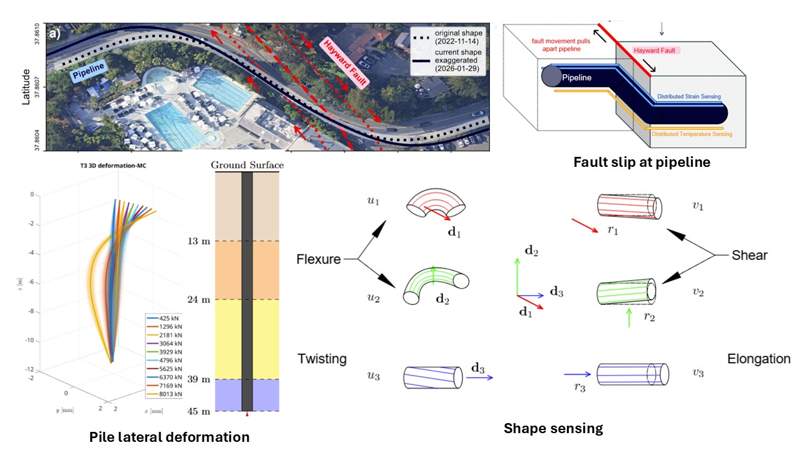

Zoom Figure
Thrust 01 · Lifeline & Foundation Geotechnics
Sustainable Monitoring of Civil & Water Infrastructure
Transforming passive buried pipelines and deep foundations into continuous distributed sensors. In a full-scale deployment on an operating water pipeline crossing the active Hayward Fault, I combined distributed strain/temperature sensing with Cosserat rod kinematics to resolve slow fault-driven ground deformation to ~4 mm/year precision. Paired with PDE-constrained optimization (PDECO), my framework infers pile bearing capacity, eccentric load response, and nonlinear soil–structure interaction directly from distributed strain.